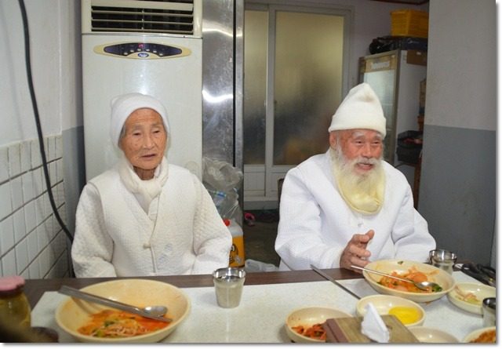
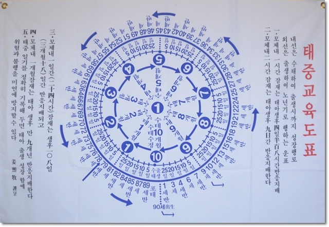

일암 강희목 선생님
과거 수운 최제우 선사가 창시한 동학에서 펼친 후천세계관을 잘 표현한 글이다.
후천은 낮이기 때문에 어두은 것은 모두 사라진다.
후천에는 빈부귀천에 다 없어진다.
선천은 9X9 = 81수를 쓰나,
후천은 10X 10= 100수를 쓴다.
선천(先天) 시대는 보이지 않은 무형의 하나님을 모셨다면 후천(後天) 시대는 보이는 물을 신으로 모시는 시대가 온다.
그 이유는 인간이 회석연료와 농약을 사용하여 지구 전체 물을 흐리게 하고 부정부패의 검은 물질은 위에서 아래로 흘러 내려 천하가 욕망의 오염이 되어있기 때문이다.
그래서 탈레스는 물이 만유의 근본이라 했고, 불교나 기독교에서 사제 임명시에는 세례(洗禮)를 물로 뿌라며, 노자는 상선약수(上善若水)라 하지 않앗던가!
후천에는 효자 효부가 권력을 쥔다.
미륵불시대는 좌불이 어니라 입불시대다. 행동하는 시대이다.
- 미래시대에는 간판, 학력이 없어져 버린다.
- 선천에는 보이지 않는 귀신과 하늘, 하나님을 많이 활용하였다.
그러나 후천에는 그 결과, 열매를 보고 평가를 한다.

선천은 하나님, 부처님을 믿었지만 후천(後天)은 자기가 하나님이요, 부처님이다.
- 자기가 자기 배낭을 지고 다녀야 한다.
- 대통령 부인도 자기가 밥을 해먹어야 한다.
후천은 낮10시간, 밤 10시간, 하루가 20시간이다.
24시간은 지상수이지 하늘수가 아니다.
10시간 수는 부귀귀천이 하나로 된다.
후천에는 자식을 많이 낳지 않는다.
- 선천은 봄철의 춘기운수로 생산을 많이 한다.
- 후천은 가을철 금기운으로 낙엽 지는 운이다.
양심자는 영생하지만 비양심자는 탄생되지 않는다.
- 이유 : 마대 속에 알곡이 들어가야 종자가 되지만, 안 들어가면 썩어버린다.
후천은 늘 푸른 소나무와 대나무다.
- 낙엽송은 모두 떨어져 버린다.
1년은 40년이다.
- 봄 10년, 여름 10년, 가을10년, 겨울 10년이다.
후천에는 등기권이 없다.
- 말하자면 손을 엎어버리는 것과 같다.
후천에 의식주는 모두 해결된다.
- 경제가 해결되니, 최고가 도인, 문화인이다.
후천에는 불경, 성경이 다 사라져 버린다.
- 지금까지 나온 것은 써먹지 않는다.
- 그 좋은 사서삼경도 다 들어가 버렸다.
- 유교를 보면 안다.